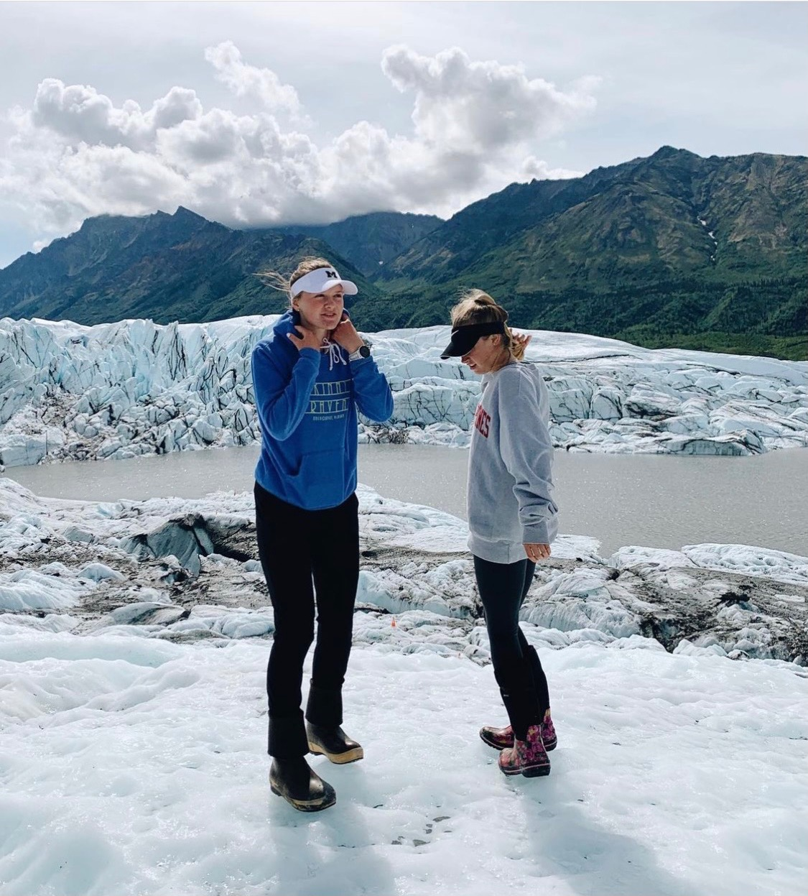
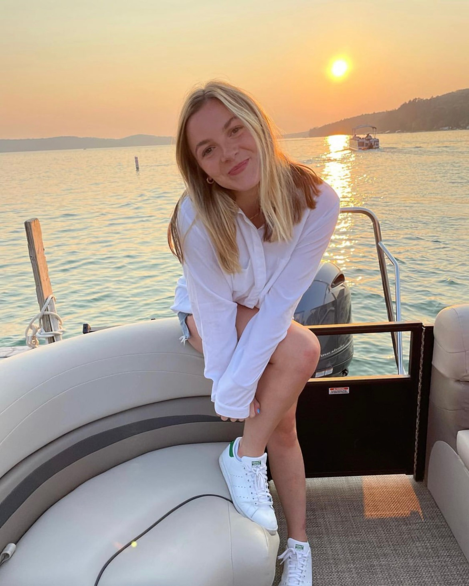
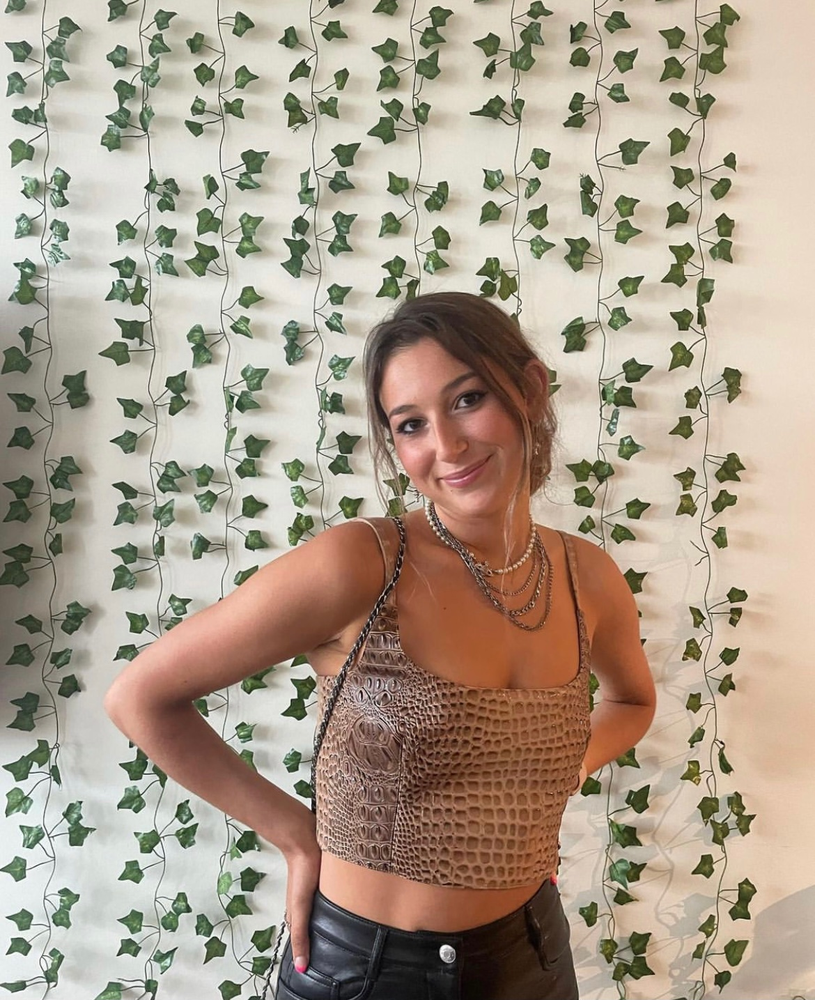
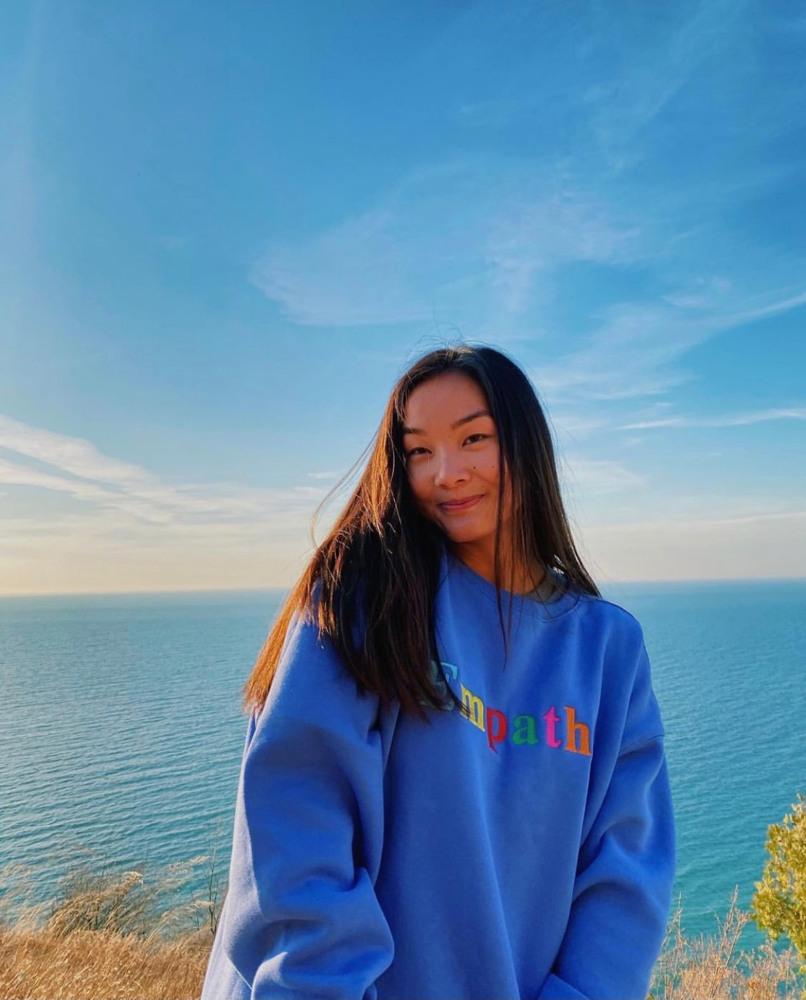
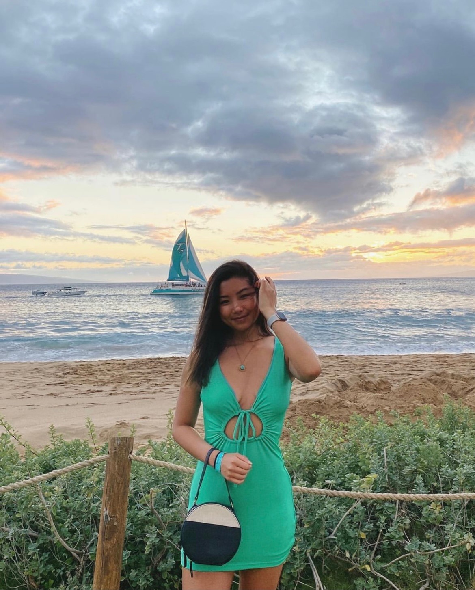

Why Sigma Kappa?
In order to demonstrate member's love for our chapter, we collected their responses on why they love Sigma Kappa Alpha Mu. From favorite memories, to friendships that last a lifetime, you can see how strong of a connection alumni and current members feel towards our sorority.
Paige Boyes and Marian Mamikunian
"We love SK because of how welcoming, approachable, and supportive everyone in the house is. It has been so fun getting to know everyone better this semester and we feel that our confidence has skyrocketed as we’ve been able to further our connections with each other. Whether you want someone to get ready with on game days, or you need someone to walk with you to the library, there are always girls who won’t hesitate to join you. These women have been nothing but uplifting and it is already evident that we are all family!"
Anna Osborne
"I was very lucky to grow up with a sister so close in age to me and really missed having her as my right hand after I left for college. I love living with a group of girls who are all so supportive and have such diverse hobbies and areas of study. It’s so amazing hearing about all of the incredible things girls in our chapter are doing and encouraging each other along the way"
Bella Young
"I was always hesitant to rush but am now SO happy I did. Through SK, I met remarkably intelligent, talented, diverse, kind, and loyal friends. Our different experiences, backgrounds, and personalities foster and enhance meaningful relationships among us. I’m forever grateful for SK and all the amazing people and experiences it’s brought into my life! Lots of love!!"
Emily Daum
"Like many others, I was super nervous about recruitment and had no idea what to expect from it. But, as soon as I walked into SK I immediately felt comfortable because of the genuine, interesting, and funny conversations I had throughout the process. I soon fell in love with my PC and have found every single girl to most kind-hearted, intelligent, and motivating people I’ve ever met. Forever grateful to have made the decision to join SK"
Elizabeth Yang
"Joining SK was probably one of the best decisions I’ve ever made. SK introduced me to so many unique, amazing, and inspiring girls that I can now confidently say are all my best friends. I am so lucky to have all my sisters by my side through thick and thin, and I genuinely couldn’t imagine my college experience without them"